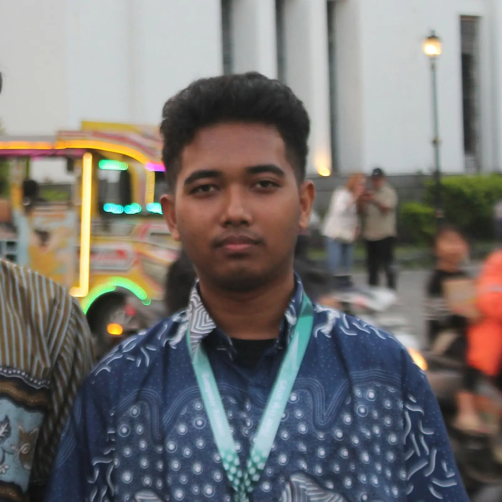

Bachtiar Nugraha
"Mahasiswa biasa yang selalu berusaha menyempurnakan setiap baris kode, arsitektur sistem, dan logika komputasi."
Berbasis di Bandar Lampung, Indonesia. Tertarik mendalam pada rekayasa perangkat lunak, perancangan sistem web, analisis algoritma matematis, serta penerapan machine learning. Saat ini aktif mendampingi praktikum mahasiswa sebagai asisten dosen di Universitas Lampung.

Halo! Senang Anda mampir ke portfolio saya. Semoga harimu menyenangkan dan mari terhubung untuk berkolaborasi.
Latar Belakang
Berawal dari olimpiade informatika di bangku SMA, saya mendalami ilmu komputasi di Universitas Lampung dengan fokus pada rekayasa perangkat lunak, analisis algoritma, dan kecerdasan buatan, serta aktif sebagai asisten dosen praktikum.
Tech Stack
Bahasa pemrograman, teknologi web, dan perkakas komputasi yang saya gunakan dalam pengembangan perangkat lunak.
Proyek Pilihan
Desain Grafis
Eksplorasi antarmuka pengguna (UI/UX), sistem desain, dan aset grafis digital format WebP.
Pengalaman & Pendidikan
// Pengalaman
// Pendidikan
Kontak
Terbuka untuk kolaborasi riset, rekayasa perangkat lunak, maupun diskusi seputar teknologi dan komputasi.